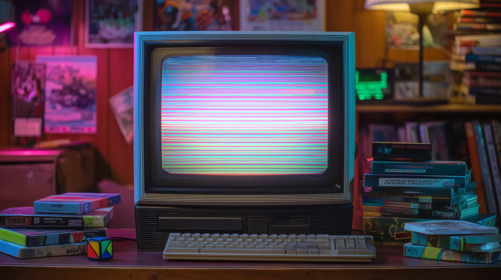

SISTEMA ASCENT DE DESIGN V1.0 DS
Onde a tipografia respira e a interface se cala.
Fundação branca, lettering transparente e movimento cinematográfico — uma síntese do AEX, do Digital Architect e do guia de animações Gemini em um único vocabulário visual.
Showreel Ariete
Demonstração cinematográfica e comportamento do produto Ariete Rosa no ambiente.
Tipografia
Três vozes: Oswald grita, Inter explica, Playfair sussurra.
Oswald
- family: 'Oswald', sans-serif
- weights: 400 · 500 · 600 · 700
- uso: títulos, métricas, lettering
Inter
- family: 'Inter', sans-serif
- weights: 300 → 800 (woff2 local)
- uso: corpo, UI, navegação, labels
Playfair
- family: 'Playfair Display', serif
- weights: 400 · 500 (italic)
- uso: citações, frases editoriais
Mono
- family: ui-monospace, SFMono,
- Menlo, Consolas, monospace
- weights: 400 · 700 (sistema)
- uso: specs, metadados, chips
Conquiste o ar
6–9.5rem · lh 0.85
ls -0.04em · uppercase
Doutrina do limite
3.75rem · lh 0.9
ls -0.03em · uppercase
Inventário de hardware
2.25rem · lh 1.1
ls -0.02em · uppercase
Subtítulo de seção em Inter
1.5rem · lh 1.3
ls -0.01em · none
Título de card ou item de lista
1.125rem · lh 1.4
ls 0 · none
Eyebrow de bloco
0.875rem · lh 1.4
ls 0.08em · uppercase
A AEX desenvolve sistemas de campo para sobrevivência controlada em ambientes instáveis — cada elemento existe para reduzir atrito.
1.125rem · lh 1.75
ls 0 · none
Texto corrido padrão para descrições de produto, parágrafos de apoio e conteúdo editorial do sistema.
1rem · lh 1.6
ls 0 · none
Texto secundário para cards compactos, notas de rodapé de seção e descrições densas.
0.875rem · lh 1.5
ls 0 · none
0.6875rem · lh 1
ls 0.28em · uppercase
0.75rem · lh 1.4
ls 0.1em · uppercase
"Silêncio e sobrevivência são a mesma coisa em altitude."
1.125rem · lh 1.5
ls 0 · none
Sistema de cores
Paleta mineral: base branca alpina, tinta granito e um único acento de aço glacial.
Base Alpina
Primária · Background
- HEX #EBEDEA
- RGB 235 · 237 · 234
- HSL 100° · 8% · 92%
Tinta Granito
Primária · Texto
- HEX #2D322F
- RGB 45 · 50 · 47
- HSL 144° · 5% · 19%
Aço Glacial
Acento · Interação
- HEX #3F556B
- RGB 63 · 85 · 107
- HSL 210° · 26% · 33%
Carvão Noturno
Secundária · Dobras escuras
- HEX #1E2420
- RGB 30 · 36 · 32
- HSL 140° · 9% · 13%
Musgo Tático
Decorativa · Painéis hover
- HEX #414F3F
- RGB 65 · 79 · 63
- HSL 113° · 11% · 28%
Branco Puro
Neutra · Superfície de produto
- HEX #FFFFFF
- RGB 255 · 255 · 255
- HSL 0° · 0% · 100%
Feedback semântico
Variantes de opacidade · Tinta Granito
Gradientes do sistema
Regras: texto desabilitado = tinta /45 · bordas padrão = tinta /10 (claro) e branco /10 (escuro) · hover sempre converge para Aço Glacial · alvo de contraste AA mínimo, AAA em corpo sobre base.
Componentes
Cada peça carrega o movimento do sistema.
Botões & Ações
hover · active · disabledshimmer no hover
preenche de aço
conic-gradient + spin
muda para aço
sombra de aço + lift
tinta /45 texto
Inputs · Tema claro
Helper: frequência segura, sem ruído.
Inputs · Tema escuro (footer AEX)
Cards

Ariete Rosa
R$ 240
Alpino
Painel desliza no hover: musgo /80 + blur, linha que cresce e texto com atraso encadeado.

Nova Finance
Hover no pai: fundo branco, título desliza, foto ganha cor e escala (duration-700).
Badges
Tooltips
.tooltip-trigger › .tooltip-content — sobe 6px com fade (easing do sistema)
Modal
.modal-overlay.open — overlay carvão /70 + blur;
caixa entra com animationIn (rise + blur)
Navbar
- sticky top-0 · bg-[#ebedea]/90 + backdrop-blur-md · borda tinta /10
- entrada: .nav-load → .loaded (desliza de -10px em 0.8s)
- links: ponto de aço no hover · o item ativo mantém o ponto visível
Sections · padrões de dobra
imersiva · parallax
- toda dobra abre com label entre linhas h-px + título Oswald + acento Playfair
- fundo sempre vivo: grade técnica, orbe .float-orb ou foto .js-immersive-bg
- conteúdo entra com .reveal / .animate-on-scroll escalonado
Movimento é identidade fundo · parallax · sempre vivo
Iconografia
Família Solar via <iconify-icon> — variante linear para UI estrutural, bold-duotone para destaques e setas animadas.
Tamanhos: 16px specs · 20–24px navegação · text-3xl/5xl decorativos. Cor padrão tinta /70 → hover Aço Glacial.
Animações
Física precisa: tudo entra com cubic-bezier(0.16, 1, 0.3, 1).
Entrada padrão
Fade + sobe 30px + desfoque 8px→0. Aplicada via [animation:animationIn_0.8s_ease-out_0.2s_both] e pausada até entrar em vista por scroll-reveal.js.
Reveal escalonado
Opacidade 0 + translateY(2rem), transição 1s no easing do sistema. Delays: 100/200/300/500/700ms.
Máscara de texto
Linha sobe de translateY(110%) dentro de um wrapper com overflow hidden — 1.2s.
Ascensão
Feixe shimmer
Brilho diagonal varre o botão no hover (-100% → 200%, skew -15°).
Lanterna
Radial-gradient de aço segue o cursor (--mouse-x/--mouse-y). Este card é a demo.
Parallax cinemático
parallax.js move persianas em velocidades escalonadas (rAF, clamp ±180px) e dá zoom 1.05→1.12 na quebra imersiva.
Clip letra a letra
Cada glifo sobe de translateY(110%) com atraso incremental de 80ms.
Painel de vidro
rgba(23,23,23,0.6) + blur(20px) — chips, overlays e legendas sobre fotografia.
Fundo de seção vivo
Grade técnica + orbe com deriva de 14s (floatOrb) — o fundo padrão de todas as dobras.